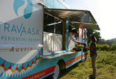

THIS MONTH |
|  |
Think Antelope Tacos and Tempeh Mushroom Lettuce Cups. Read an exclusive interview with Sam Ray, the mastermind in charge of Travaasa’s Food Truck. He talks culinary adventures, the Travaasa Farm and the exciting new food truck menu. more |
|
Try this new take on an old favorite. The lemon-drop cocktail burst on the scene in the ’80s, but its humble beginnings are from a small bar in San Francisco in the ’70s. There are many different variations of this classic cocktail, but keeping it simple and fresh is best. And here at Travaasa, we are doing just that. Follow our special recipe for a unique variation of this summer cocktail that looks almost as good as it tastes. more |
|
To accompany the addition of the Western Sky treatment room at Travaasa Austin, men can also look forward to a spa menu created just for them. From "Au Naturel Feet" pedicures to the "What Ales You" massage, we've got your back. Literally. more |
|
We’re teaming up with SpaFinder for an Adult Summer Boot Camp Sweepstakes. Enter from July 15 to August 15 and you could win a three-day/two-night stay for two at Travaasa Austin in a Trail View Room on the Total Travaasa All-Inclusive Package. more |
|
Big things are happening at Travaasa Austin this summer, including a second phase of renovations taking place July 1 through August 31. Guest rooms in buildings 1–4 will receive all the fresh updates seen in buildings 5, 6 and 7, completing the project. Don’t fret; Travaasa is still open for business! Our pool and spa are fully operational, and Jean’s Kitchen is also open for breakfast, lunch and dinner.
more |
"An Aussie and a Texan Together in Heaven… We were at Hana for four nights in late May, and we loved the peacefulness and serenity of this place. It is a very quiet place, Hana, but is the old Hawaii and you get entrenched in its beauty." - David R., from Melbourne, Australia, sharing his experience at Travaasa Hana on TripAdvisor |
ON THE HORIZON
August
Celebrate the last month of summer by plunging into something new as the sun sets on your summer vacation with Dive Month at Travaasa. Take advantage of the adventures surrounding you with our Dive into Pilates, Tai Chi Dive and Surf, and Foot Care Going Deeper classes. Have a little fun with Pool Volleyball or Soaker Golf, and Dive into Your Past with Journaling. Kick off the last weekend of summer with our Labor Day Mountain Ball Tournament.
September
Uncover and discover the best of life at Travaasa Austin and Hana as you step into fall. For all of our yogis out there, join us as we celebrate National Yoga Month with Chakra-Centered Yoga, Neck and Shoulder Yoga Therapy, Spa Experience Meditation and Yoga Mudras – Honoring the Essential. Show your competitive side in the Hana Relay, and step up to a cooking challenge in the Mystery Box Challenge in Austin. |
|